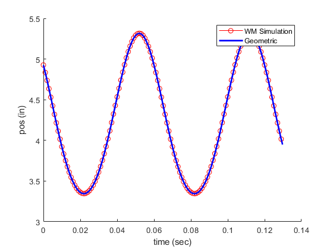
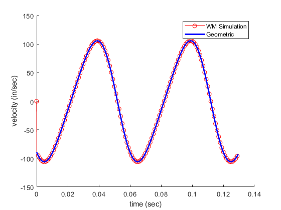
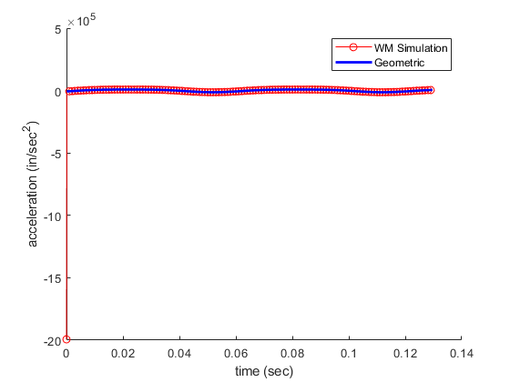

Contents
clc,clear,close all
load('SliderCrank.dta')
tSim = SliderCrank(:,1);
posSim = SliderCrank(:,2);
velSim = SliderCrank(:,3);
accSim = SliderCrank(:,4);
posSim = posSim - 376.217 + 4.33;
Geometric equations
R = 1.97/2;
L = 4.33;
theta0 = .8396;
thetadot = 1000*2*pi/60;
theta = thetadot*tSim + theta0;
phi = asin((R/L)*sin(theta));
s = R*cos(theta) + L*cos(phi);
dt = tSim(2) - tSim(1);
sdot = diff(s)/dt;
sdotdot = diff(sdot)/dt;
CFM
b = 2.75/12;
sl = 1.97/12;
dthetadt = 1000;
Vo = (pi/4)*b^2*sl;
Vdot = Vo* dthetadt
Vdot =
6.7714
Plotting
figure(1)
hold on
plot(tSim,posSim,'-ro','MarkerIndices',1:10:length(posSim))
plot(tSim,s,'b','LineWidth',2.0)
legend('WM Simulation','Geometric')
xlabel('time (sec)')
ylabel('pos (in)')
hold off
figure(2)
hold on
plot(tSim,velSim,'-ro','MarkerIndices',1:10:length(posSim))
plot(tSim(1:end-1),sdot,'b','LineWidth',2.0)
legend('WM Simulation','Geometric')
xlabel('time (sec)')
ylabel('velocity (in/sec)')
hold off
figure(3)
hold on
plot(tSim,accSim,'-ro','MarkerIndices',1:10:length(posSim))
plot(tSim(2:end-1),sdotdot,'b','LineWidth',2.0)
legend('WM Simulation','Geometric')
xlabel('time (sec)')
ylabel('acceleration (in/sec^2)')
hold off
  